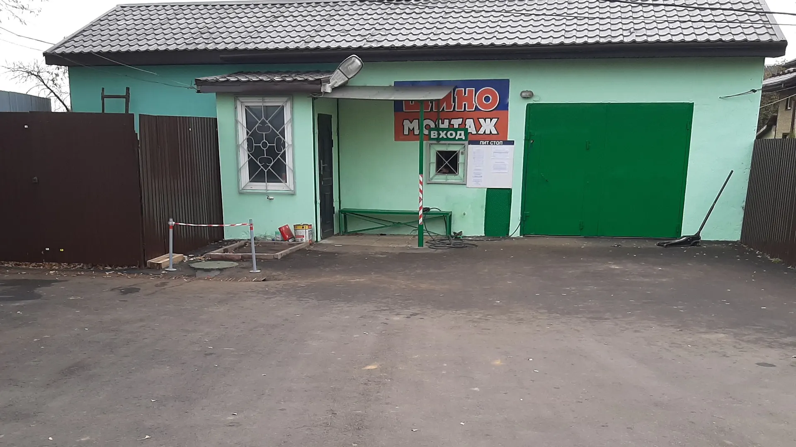
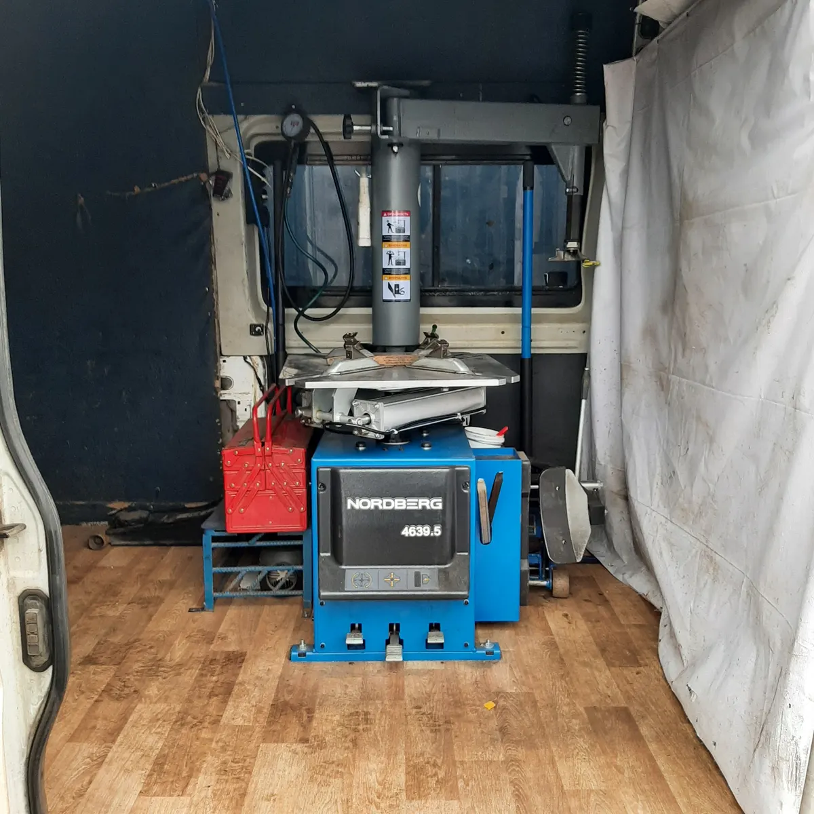
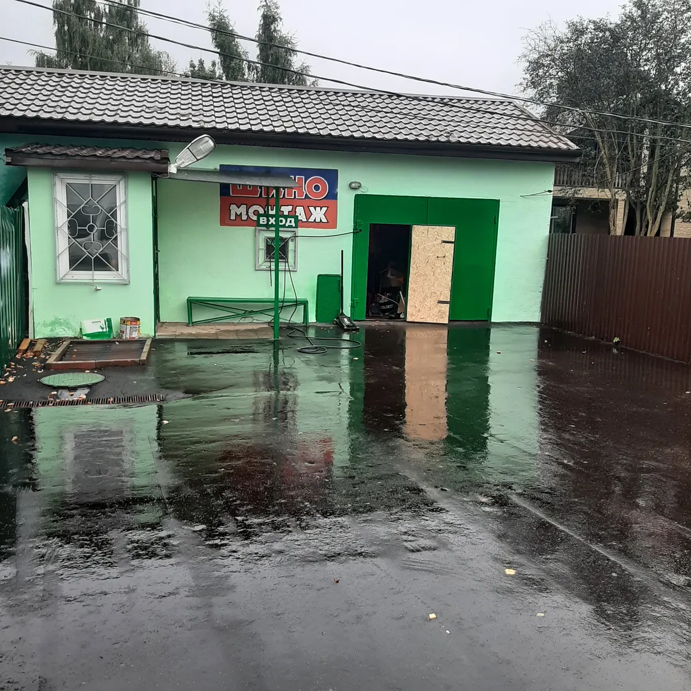
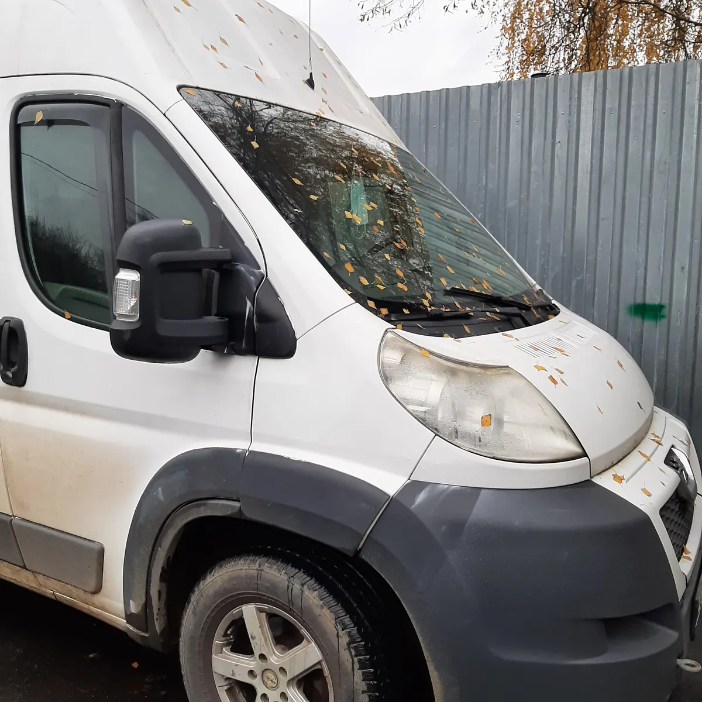

Шиномонтаж · Истра · деревня Трусово
Шиномонтаж в Трусово: на месте и с выездом к вам
Каждый день с 9 до 19. Шиномонтаж, балансировка, вулканизация, хранение шин. Выберите время: заявка откроется в WhatsApp, или позвоните.
- Каждый день с 09:00 до 19:00
- Выездной шиномонтаж, хранение шин, вулканизация
- Оплата картой и по QR-коду

Услуги
Прайса на карточке на Яндекс.Картах нет, поэтому цену уточняйте по телефону +7 (906) 750-00-06. Услуги – по особенностям карточки.
Колёса и шины
- Шиномонтажуточнить
- Балансировкауточнить
- Вулканизация, ремонт проколауточнить
Сервис
- Выездной шиномонтажуточнить
- Хранение шинуточнить
Оплата картой, по QR-коду и наличными, по данным карточки.
Как проходит
- 01
Выбрали услугу и время
Заявка откроется в WhatsApp, останется нажать «отправить». Можно и позвонить: +7 (906) 750-00-06.
- 02
Приехали в Трусово, 11
Вывеска «Шиномонтаж» на здании, вход со двора (по фото с карточки).
- 03
Колёса пошли в работу
Клиент в отзыве: «всё объяснил и показал как правильно хранить шины».
- 04
Забрали машину
Клиент в отзыве: «Ждал недолго, сделали качественно».



Чем удобно
Выезд к вам
В особенностях карточки: выездной шиномонтаж. На фото ниже станок в микроавтобусе. Вызов по телефону +7 (906) 750-00-06.
Хранение шин
Хранение шин указано в особенностях карточки. Условия уточняйте по телефону.
Объясняют, что с колёсами
Клиент в отзыве: «на все вопросы ответят, всё объяснят».
Работаем каждый день
С 09:00 до 19:00 без выходных, по данным карточки.
Отзывы с Яндекс.Карт
«Отличное место, где работают профессионалы. Я была и по записи, и спонтанно приезжала колеса подкачать, и с ребёнком, и без, и всегда мне делали все на высшем уровне. Без пафоса, без напрасных обещаний, а четко, по делу, и всегда на совесть. Из всех сервисов в округе я всегда выбираю этот.»
Natalia T. · 29 декабря 2025
«Ребята свою работу знают и делают хорошо. Ценник адекватный. Спасибо Алесею, всё объяснил и показал как правильно хранить шины.»
Александр Смирнов · 27 ноября 2025
«Мужики свое дело знают, на все вопросы ответят, всё объяснят. Ждал недолго, сделали качественно👍🏻»
SirDaniilRUS · 27 ноября 2025
Отзывы с карточки на Яндекс.Картах, без правок.
Частые вопросы
Когда вы работаете?
По карточке – каждый день с 09:00 до 19:00.
Нужна ли запись?
На карточке указана предварительная запись, а клиент в отзыве пишет: «была и по записи, и спонтанно». Выберите время в форме на сайте или позвоните, чтобы не ждать в очереди: +7 (906) 750-00-06.
Есть выездной шиномонтаж?
Да, он указан в особенностях карточки: станок в микроавтобусе. Вызов и условия – по телефону +7 (906) 750-00-06.
Храните шины?
Хранение шин указано в особенностях карточки. Условия и цену уточняйте по телефону.
Сколько стоит?
Прайса на карточке нет, цену уточняйте по телефону +7 (906) 750-00-06.
Запишитесь на удобное время
- Адрес
- деревня Трусово, 11, Истра
- Часы
- Каждый день 09:00–19:00
- Телефон
- +7 (906) 750-00-06